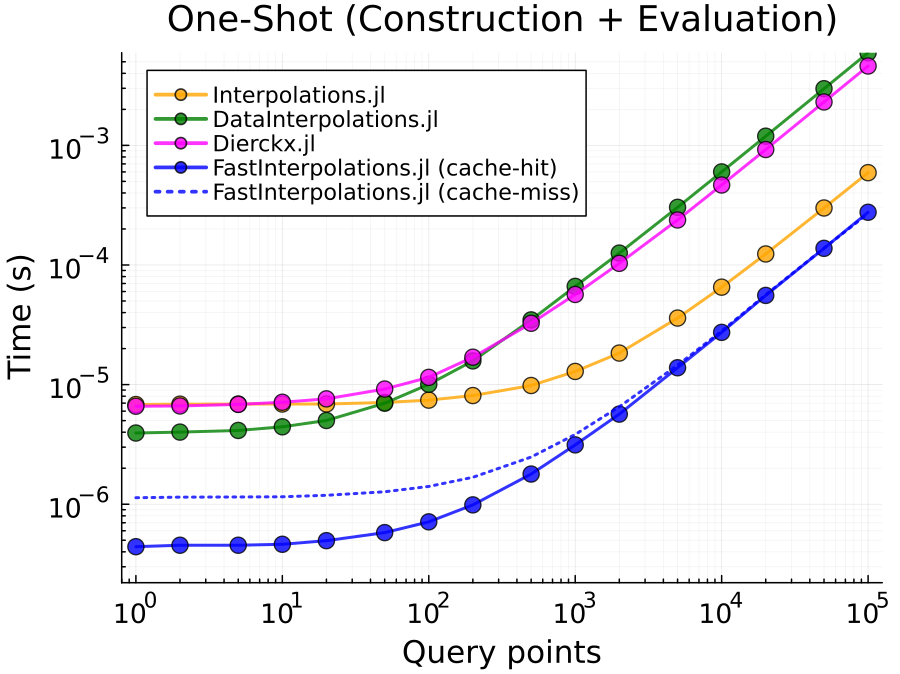

Benchmarks
Performance comparison against Interpolations.jl and DataInterpolations.jl.
Setup
cd benchmark
julia --project=. -e 'using Pkg; Pkg.instantiate()'Configuration
The benchmark duration is set to DEFAULT_BENCH_SECONDS = 0.5 in simple_benchmarks.jl for faster iteration. For more accurate results, increase this value to 5 or higher:
# In simple_benchmarks.jl, line 39
const DEFAULT_BENCH_SECONDS = 5.0 # More accurate resultsNote: The result plots below were generated with DEFAULT_BENCH_SECONDS = 5.0 or higher.
Usage
using Pkg; Pkg.activate(".") # assuming `benchmark` is working directory
include("simple_benchmarks.jl")
include("plot_scaling.jl")
# Run full scaling benchmark
result = benchmark_scaling()
# Generate plots
plot_scaling_results(result) # combined plot
plot_scaling_separate(result; save_dir="../docs/images", dpi=250)Output
result.construction- Construction time vs grid size (5 to 1000 points)result.evaluation- Evaluation time vs query points (1 to 10000, fixed grid n=100)result.oneshot- One-shot (construction + evaluation) time with cache-hit/miss comparison
Results
One-Shot (Construction + Evaluation)

Combined construction + evaluation time per call (fixed grid size n=100, varying query points).